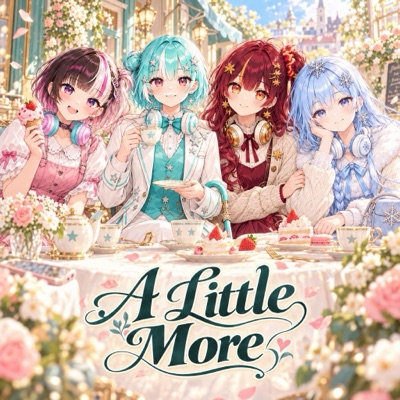
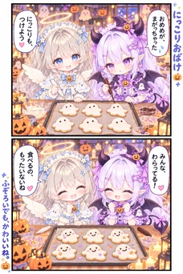
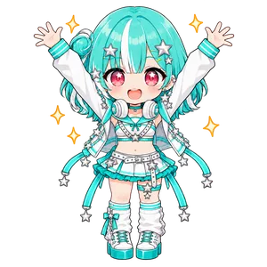
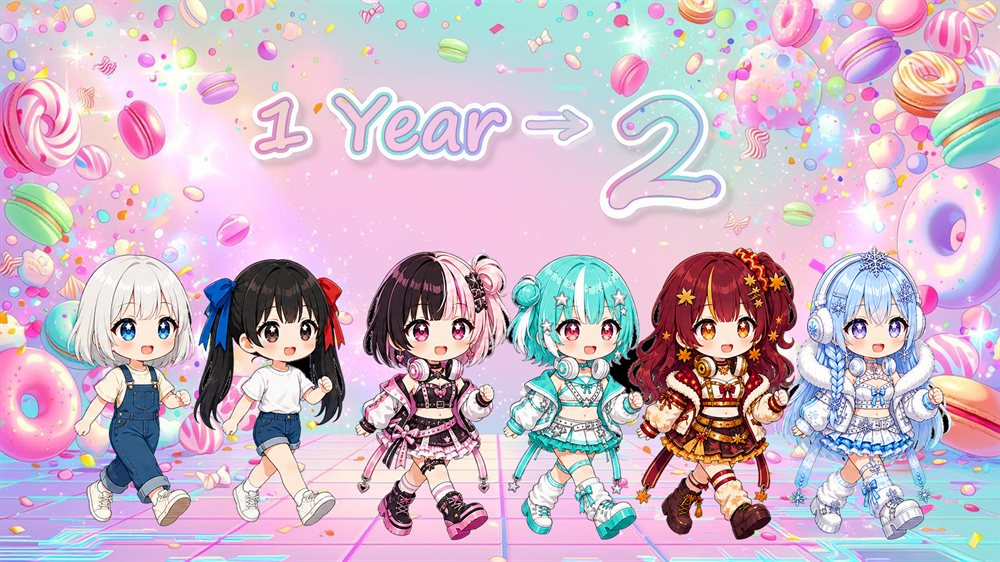

🍁 秋、きました！ 🍁 Autumn is here!
なつ＆あきと一緒に、あたたかくて甘い秋の音楽をお届けします🍠☕️
紅葉の季節も、しんたやの曲でゆっくり楽しんでいってね🍁
With Natsu & Aki, here's to a warm and sweet autumn of music🍠☕️
Enjoy the season of autumn leaves with shintaya's tunes🍁
shintaya / しんたや
AIで紡ぐ、甘くてかわいい音楽世界 🎵✨ Weaving sweet, kawaii music with AI 🎵✨
YouTubeで聴くListen on YouTube チャンネル登録はこちら 🍰 SubscribeSubscribe for sweet new tunes 🍰 LIVE 24/7 Radio 🎧 ALL MIX Lounge・24時間ずっと配信中ALL MIX Lounge · streaming 24/7 📝 note記事📝 Blog post (note) 24/7 Radio の裏話

📖 最新の2コマ漫画📖 Latest 2-panel Comic 天使ちゃん＆悪魔ちゃん
🛠 制作物アップデート🛠 Works Update 輝度＆オーディオ切替アプリ🍁 秋、きました！ 🍁 Autumn is here!
なつ＆あきと一緒に、あたたかくて甘い秋の音楽をお届けします🍠☕️
紅葉の季節も、しんたやの曲でゆっくり楽しんでいってね🍁
With Natsu & Aki, here's to a warm and sweet autumn of music🍠☕️
Enjoy the season of autumn leaves with shintaya's tunes🍁
shintaya / しんたや
しんたやの活動（音楽・楽曲メニュー・キャラクター図鑑・壁紙・お便りBOX）が、ぜんぶこのページから辿れるようになりました🍰
気になるところを、ぜひのぞいてみてください。右上の🌐から英語表示にも切り替えられます🌍
Everything — music, the song menu, character gallery, wallpapers, and the letter box — is now reachable right from this page🍰
Have a look around! You can switch to English anytime with the 🌐 button at the top right🌍
shintaya / しんたや

いつも聴いてくれて、本当にありがとうございます。おかげさまで、このチャンネルが1年を迎えることができました。
後半はKawaii Future Bass中心でやってきましたが、たまに違うジャンルも出てきます。そこは「味変」だと思って、肩の力を抜いて楽しんでもらえたら嬉しいです🍰
コメントやチャンネル登録、ひとつひとつが本当に励みになっています。再生・登録・コメント——みんなのおかげで次の曲を作れています。
このチャンネルが、たくさんの人の心に笑顔を作れる場所になればと思っています。聴いて、ちょっと心が軽くなったり笑顔になれたら、それが一番うれしいです☺️
これからも、音楽で楽しくなれる場所として育てていきます。2年目もよろしくお願いします！
🎉 We just turned 1 year old!
Thank you so much for always listening. Lately I've focused on Kawaii Future Bass, but sometimes a different genre slips in — think of it as a little "change of flavor" and just enjoy the switch-up🍰
Every play, every sub, every comment really keeps me going. My hope is that this channel becomes a place that puts a smile in many hearts. Here's to year two — thank you for being here☺️
shintaya / しんたや
Kawaii Future Bassを中心に、AIツール（Suno・FL Studio）で音楽を制作しているクリエイターです。
スイーツをテーマにしたオリジナル楽曲（Sugar, Cookie, Lemon Tart...）で、ふんわり甘く、ちょっと切ない世界観を発信中。
海外リスナーにも届くよう英語タイトルを併記し、現在は世界各国の方に聴いていただいています🌍
音楽以外にも、睡眠用Androidアプリ「SleepFade」のテスター運営など、AIを道具として使いこなす活動を続けています。
A creator making Kawaii Future Bass with AI tools (Suno, FL Studio). I craft sweet, dessert-themed original songs (Sugar, Cookie, Lemon Tart...) with a soft, slightly bittersweet vibe.
With bilingual titles, my music reaches listeners around the world. Beyond music, I'm running closed tests for my sleep timer app "SleepFade" — exploring what's possible when AI becomes a creative tool.

🤍 しろちゃんのLINEスタンプ 🤍 Shiro's LINE Stickers
しろちゃんの、毎日のトークにそのまま使える甘くてかわいいスタンプです。 Sweet, kawaii Shiro stickers made for your everyday chats.
LINE STORE でしろちゃんを見る ▸ See Shiro on LINE STORE ▸
🌸 輝度＆オーディオ切替アプリ 🌸 Brightness & Audio Switcher UPDATE
画面の明るさと音声デバイス（出力・マイク・音量）をワンタッチで切り替えできる Windows 用ユーティリティ。2人目のマスコット「Natu ちゃん」が仲間入り！haru ちゃんと選べて、全ポーズがコマアニメで動きます。 A Windows utility to switch screen brightness and audio (output / mic / volume) in one tap. New mascot "Natu" joins "haru" — pick your favorite, and every pose is now animated!
タップで詳細・できることを見る ▸ Tap to see what it can do ▸
🌙 SleepFade（Beta） 🌙 SleepFade (Beta)
音楽や環境音を少しずつフェードアウトさせて、心地よく眠りにつける Android 用スリープタイマーアプリ。現在クローズドベータでテスターを募集中です。 An Android sleep-timer app that gently fades out music and ambient sounds so you can drift off comfortably. Currently in closed beta — testers welcome.
Google Play でテスターに参加 ▸ Join the beta on Google Play ▸
🎵 リズラボ（音ゲー練習プレイヤー） 🎵 RhythmLab (rhythm-game practice player)
音楽ゲームの画面収録を、ゆっくり再生と区間ループで見返す iPhone / iPad アプリ。苦手な数秒だけを繰り返して、指の動きを光る軌跡で確認できます。App Store 申請準備中。 An iPhone / iPad app for reviewing your rhythm-game screen recordings in slow motion and on a loop. Repeat just the tricky seconds and watch your finger trails glow. Coming to the App Store.
タップで詳細・できることを見る ▸ Tap to see what it can do ▸